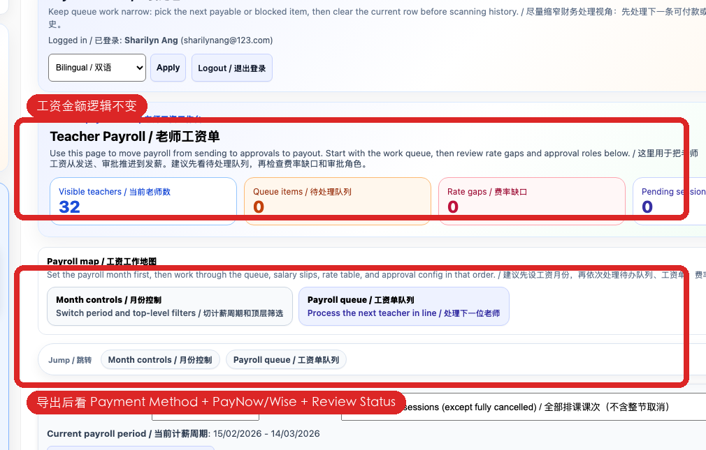
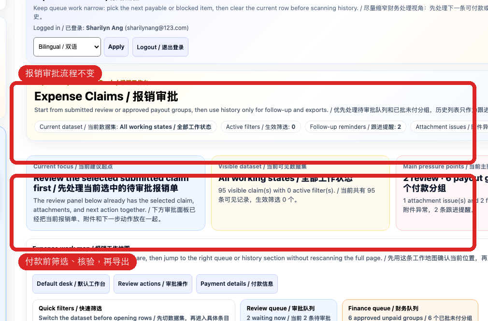
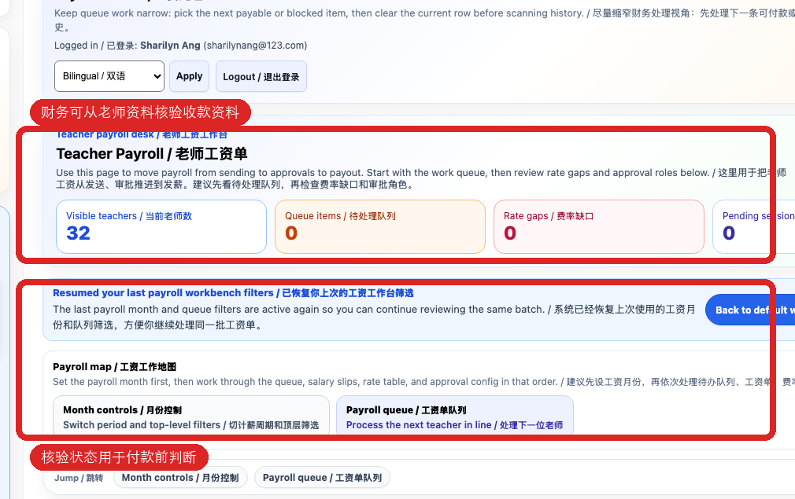

本流程只给财务/Admin 使用。新规则是：本地老师 PayNow，海外老师 Wise；Bank Transfer 只作为历史资料参考。工资、报销和 tutor cost 金额计算逻辑不变。
This guide is for Finance/Admin only. New rule: local tutors use PayNow, overseas tutors use Wise. Bank Transfer is legacy reference only. Payroll, reimbursement, and tutor-cost amount calculations are unchanged.
工资页面和金额计算不变。变化是导出列带出 PayNow、Wise、Payment Profile Status、Verified At/By 和历史银行资料。
The payroll page and amount calculations are unchanged. The export now includes PayNow, Wise, Payment Profile Status, Verified At/By, and legacy bank details.

老师报销仍按原审批流程处理。导出时会带出提交人对应老师的收款资料，付款前先核验状态。
Tutor reimbursements still follow the existing approval process. The export includes the linked tutor payment profile; verify the status before payment.

如果导出资料为空、状态不是 Verified，或付款方式和字段不匹配，先回老师资料核验，不要猜。
If export details are blank, status is not Verified, or the payment method does not match the fields, go back to the teacher profile and review. Do not guess.

| 列 / Column | 用途 / How Finance should use it |
|---|---|
| Tutor Code / Teacher Name | 确认付款对象，避免重名。 / Confirm the payee and avoid duplicate-name mistakes. |
| Payment Method | 决定使用 PayNow 还是 Wise。 / Decide whether to use PayNow or Wise. |
| PayNow Type / ID / Name | 本地老师付款使用；付款前核对银行界面显示名称。 / Use for local tutor payout; verify the displayed bank name before payment. |
| Wise Account Holder / Email / Phone / WiseTag | 海外老师付款使用；至少要有一种可查找标识。 / Use for overseas tutor payout; at least one searchable Wise identifier is required. |
| Payment Profile Status / Verified At / Verified By | 判断是否已核验。 / Check whether the profile has been reviewed. |
| Legacy Bank columns | 只作历史核对，不作为新的默认付款方式。 / Historical reference only; not the new default payment method. |
不要付款。让老师回 Payment Details 补资料。 / Do not pay. Ask the tutor to update Payment Details.
先核验。确认无误后设为 Verified。 / Review first. Mark as Verified only after confirming.
先核对身份和备注；不能确认就 Rejected。 / Check identity and notes first; if unsure, mark Rejected.
不要改系统金额；单独记录原因和资料来源。 / Do not change system amounts; record the reason and source separately.